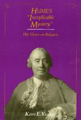

<body bgcolor="#FFFFFF" text="#000000" link="#0000FF" vlink="#CC0000" alink="#CC0000"><center><hr width="350" size="1" align="center" noshade>A reexamination of Hume's views on religion<hr width="350" size="1" align="center" noshade><p><a href="https://cdcshoppingcart.uchicago.edu/Cart/ChicagoBook.aspx?ISBN=9780877226437&&PRESS=temple" target="_top">Buy this book!</a> | <a href="https://cdcshoppingcart.uchicago.edu/Cart/Cart.aspx?PRESS=temple" target="_top">View Cart</a> | <a href="https://cdcshoppingcart.uchicago.edu/Cart/Cart.aspx?PRESS=temple" target="_top">Check Out</a></p><p></p></center><!--none//--><h1>Hume's "Inexplicable Mystery"</h1>
<H2>His Views on Religion</H2>
<h3>Keith E. Yandell</h3>
<P>cloth 0-87722-643-1 $56.50, Jan 98, <FONT COLOR=#990033>Out of Stock Unavailable</FONT>
<br>paper 1-56639-089-3 $36.95, Mar 93, <FONT COLOR=#990033>Available</FONT>
<br>Electronic Book 1-43990-405-7 $36.95 <FONT COLOR=#990033>Out of Stock Unavailable</FONT>
<BR> 352 pp
</P><BLOCKQUOTE><I>"Yandell has put us all in his debt for the care with which he has examined the writings of one of the most influential critics of religion."</I>
<br>&#151<b><I>Journal of Theological Studies</I></b><I></I></BLOCKQUOTE>
<p>The eighteenth-century Scottish empiricist David Hume has been regarded as a notorious enemy of religion. Still, his discussion of religion is systematic, sophisticated, and sustained. Focusing mainly on two of Hume’s works, the relatively neglected <I>Natural History of Religion</I> and the more widely read <I>Dialogues Concerning Natural Religion</I>, Keith Yandell analyzes Hume’s treatment of a subject that he described as "a riddle, an enigma, an inexplicable mystery." In so doing, he explores the relationships between Hume’s philosophy of religion and his general philosophy.
<p>Hume’s "evidentialism," applied to religion, can be summed up by saying that it is unreasonable to accept a religious belief unless one has evidence for it. Since it is also Hume’s view that there is no evidence for any religious belief, he concludes that no one is ever reasonable in accepting a religious belief. Yandell examines the explanations that Hume gave for such acceptance in <I>Natural History of Religion</I>. Addressing the <I>Dialogues Concerning Natural Religion</I>, he compares Hume’s views to those of such authors as Herbert of Cherbury and Bishop Joseph Butler, traces changes in Hume’s theory of meaning, and discusses the ontological and cosmological arguments and Hume’s treatment of the problem of evil. Yandell then considers other lesser known writings by Hume that are relevant to his philosophy of religion.
<BR>&nbsp;<h2>Reviews</h2>
<p><I>"[Yandell] offers an interpretation of Hume's philosophy of religion and examines its foundations critically. The sweep of coverage and the author's control of his material are impressive. This is a readable and informative study which no one interested in Hume's views on religion can afford to neglect."</I>
<br>&#151<b>James King</b>, Northern Illinois University
<p><I>"[Yandell] has unearthed the underlying philosophical significance of [the </I>Natural History<I>]. That by itself is an important achievement and a valuable scholarly contribution. Yandell's discussion of the issues in Hume's better known writing is intrinsically important as well as constitution a significant deepening of our approach to issues in Hume's philosophy of religion. It is a tribute to Yandell's stature as a philosopher that he is able to return to ground which has been so frequently ploughed and still give us new insights and a more perceptive understanding of Hume's method and his results.... It is an original and illuminating reading of a number of major issues in Hume's philosophy."</I>
<br>&#151<b>Marvin Fox</b>, Brandeis University
<BR>&nbsp;<h2>Contents</h2><P>
<p>Preface
<br>Abbreviations
<br>Introduction
<p><b>Part I: The Natural History of Religion</b>
<p>1. The Content of the <I>Natural History</I>
<br><I>Hume's Theory of Religious Belief &#149
Hume's Apparent Approval of the Design Argument &#149
The Secondary Status of the Propensities to Religious Belief &#149
Hume on Religion and Morality &#149
Religion and Human Nature &#149
Part Twelve of the </I>Dialogues<I> &#149
Verbal Dispute in </I>Dialogue<I> Twelve &#149
Philo's Confession of Faith</I>
<p>2. The <I>Treatise</I> Repetition of the <I>Natural History</I> Pattern of Explanation
<br><I>The Skeptical Prologue &#149
Belief in an External World: Humean Constancy &#149
Belief in an Enduring Self &#149
Principles of Association as Propensities, Causality Included &#149
The </I>Treatise<I> Explanations and the </I>Natural History<I> Explanation &#149
Conflict Concerning the External World &#149
Conflict Concerning Enduring Numerically Identical Selves</I>
<p>3. Religious Belief as a Danger to Human Nature
<br><I>A Further Similarity &#149
Natural Beliefs &#149
Basic Propensities &#149
Religion and Human Nature Again &#149
Human Nature &#149
Hume and Calvin on Human Nature &#149
The Rights of Reason and the Rights of Religion</I>
<p>4. Hume's Account of Persons as Propensity Bearers
<br><I>Two Models of Human Nature &#149
The Appendix Summary &#149
The Soul or Person &#149
Meaning &#149
Do Simple Perceptions Endure? &#149
Substances &#149
Identity &#149
Time &#149
A Brief Look Backward &#149
An Example of the 'Real Connections Among Perceptions' View &#149
Self-Awareness &#149
Observability and Transparency &#149
Foundationalism &#149
Certainty and Personal Identity &#149
Transparency and Real Connections &#149
Why We Believe in Personal Identity &#149
Memory and Personal Identity &#149
Agency and Morality &#149
Summary of the 'Real Connection' Line of Reasoning &#149
Conclusion</I>
<p>5. Hume's Explanation of Religious Belief
<br><I>A Brief Review &#149
The Elements of Hume's Explanation &#149
A Critique of Hume's Strategy &#149
The Critique Assessed &#149
Religious Experience and Hume's Explanation &#149
Elements of an Argument from Religious Experience &#149
A Principle of Experiential Evidence &#149
Social Science Explanations and the Argument from Religious Experience</I>
<p><b>Part II: Hume's Discussion of Natural Theology</b>
<p>6. Hume's Evidentialism
<br><I>Hume and Radical Religious Evidentialism &#149
Bishop Butler on Probable Evidence</I>
<p>7. Hume's Theory of Meaning
<br><I>Incomprehensibility &#149
An Introduction to Ineffability &#149
Ineffability: Another Look &#149
Divine Incomprehensibility and Negative Theology &#149
Meaning, Verification, and the Designer Hypothesis &#149
Incomprehensibility Again</I>
<p>8. Design, Causality, and Purpose
<br><I>The Causal Principle and the Causal Maxim (</I>Dialogues<I>, Part Two) &#149
Theism and the </I>Dialogues<I> &#149
The Design Argument: Initial Formulation &#149
On Proportioning Degrees of Belief and Evidence &#149
Arguments from Experience &#149
Inductive Arguments and Lawlike Connections &#149
Inductive Argument and Argument by Analogy &#149
The Design Argument and Postulation of Theoretical Entities &#149
Relevant versus Irrelevant Properties &#149
The Fallacy of Composition &#149
Opposing Analogies &#149
Is the Universe a Thing? &#149
Being Designed and Having a Purpose</I>
<p>9. Inductive Arguments and Analogical Arguments
<br><I>Cleanthes' Attempt to Avoid Philo's Critique (</I>Dialogues<I>, Part Three) &#149
Inductions from Single Cases &#149
Review and Prospect &#149
A Two-Stage Design Argument &#149
Argument by Analogy to Properties of the Universe's Designer &#149
The Most Plausible Analogy or Model &#149
Miscellaneous Topics &#149
(A10) and Ultimate Explanations</I>
<p>10. Design Arguments and Multiple Models
<br><I>Ramifications of and Alternatives to the Designer Hypothesis (</I>Dialogues<I>, Part Four) &#149
More Ramifications of the Designer Hypothesis (</I>Dialogues<I>, Part Five) &#149
Alternatives to the Designer Hypothesis Again (</I>Dialogues<I>, Part Six) &#149
The Universe, Vegetables, and Animals (</I>Dialogues<I>, Part Seven) &#149
Various Models for Understanding Universal Order Again &#149
Alternative Models for Explaining Universal Order (</I>Dialogues<I>, Part Eight)</I>
<p>11. Other Theistic Arguments
<br><I>Demea's </I>a Priori<I> Arguments (</I>Dialogues<I>, Part Nine) &#149
The Notion of Necessary Existence &#149
The Universe and Necessity &#149
Explanation and Infinite Series &#149
Philonian Determinism</I>
<p>12. Evil, Happiness, and Goodness
<br><I>Religion and Fear (</I>Dialogues<I>, Part Ten) &#149
Hedonism &#149
The Equivocation Argument &#149
The Equivocation Argument Assessed &#149
Happier Possible Persons? &#149
Means and Ends &#149
The Argument of Epicurus &#149
The Argument of Epicurus Assessed &#149
Omnibenevolence and the Phenomena</I>
<p>13. Evil, Prediction, and Probability
<br><I>The Prediction Argument (</I>Dialogues<I>, Part Eleven) &#149
Is Evil </I>a Priori<I> Unlikely? &#149
The Aquinas Line &#149
The Leibniz Line &#149
Determinism and Responsibility &#149
Disanalogies between God and Human Agents &#149
Direct and Indirect Causation &#149
The Consistency Question &#149
Philo's Four Causes &#149
Philo's Four Circumstances &#149
The Four Circumstances Argument &#149
Evil and Probability</I>
<p><b>Part III: Further Humeana</b>
<p>14. Superstition, Enthusiasm, Suicide, and Immortality
<br><I>Of Superstition and Enthusiasm &#149
On Suicide &#149
Immortality &#149
Metaphysical Arguments &#149
Moral Arguments &#149
Physical Arguments &#149
Ethical Arguments &#149
The Pre-</I>Dialogues<I> Dialogue</I>
<p>15. Miracles
<br><I>What Is a Miracle? &#149
Miracles and "Extraordinary" Events &#149
Miracles and the Stormy History of Science &#149
Miracles and Epistemology &#149
Hume's Argument Appraised &#149
Hume's Subsidiary Arguments &#149
Some Comments about the Subsidiary Arguments &#149
Hume's Main Position on Miracles &#149
Conclusion</I>
<p>Notes
<br>Bibliography
<br>Index
</P><BR>&nbsp;<H2>About the Author(s)</H2>
<P><b>Keith E. Yandell</b> is Professor of Philosophy and South Asian Studies at the University of Wisconsin-Madison.</P>
<BR><H2>Subject Categories</H2>
<p><A HREF="/tempress/philosophy.html" TARGET="_top">Philosophy and Ethics</a>
</p>
<p align="center"><a href="https://cdcshoppingcart.uchicago.edu/Cart/ChicagoBook.aspx?ISBN=9780877226437&&PRESS=temple" target="_top">Buy this book!</a> | <a href="https://cdcshoppingcart.uchicago.edu/Cart/Cart.aspx?PRESS=temple" target="_top">View Cart</a> | <a href="https://cdcshoppingcart.uchicago.edu/Cart/Cart.aspx?PRESS=temple" target="_top">Check Out</a></p><p><font face="Arial" size="1"><a href="copyright.html" onMouseOver="window.status='Web Copyright Policy';return true;" onMouseOut="window.status=''" title="Web Copyright Policy">&copy;</a> 2015 <a href="http://www.temple.edu" target="new" onMouseOver="window.status='Link to Temple University home page';return true;" onMouseOut="window.status=''" title="Link to Temple University home page">Temple University</a>. All Rights Reserved. http://www.temple.edu/tempress/titles/590_reg.html</font></p>